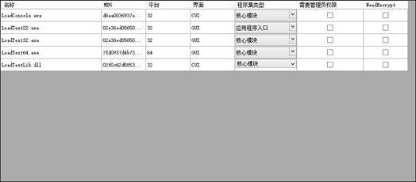
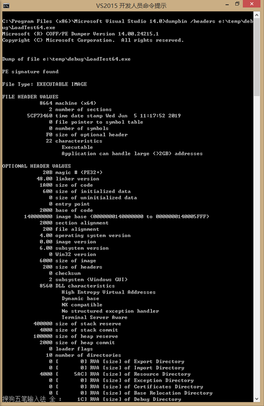

PE结构参考：
https://www.cnblogs.com/lzjsky/archive/2011/09/22/2184942.html
public static UInt16 Is64bit(string pFilePath, out UInt16 subSystem)
{
ushort architecture = 0;
subSystem = 0;
try
{
using (System.IO.FileStream fStream = new System.IO.FileStream(pFilePath, System.IO.FileMode.Open, System.IO.FileAccess.Read))
{
using (System.IO.BinaryReader bReader = new System.IO.BinaryReader(fStream))
{
if (bReader.ReadUInt16() == 23117) //check the MZ signature
{
fStream.Seek(0x3A, System.IO.SeekOrigin.Current); //seek to e_lfanew.
fStream.Seek(bReader.ReadUInt32(), System.IO.SeekOrigin.Begin); //seek to the start of the NT header.
if (bReader.ReadUInt32() == 17744) //check the PE\0\0 signature.
{
fStream.Seek(20, System.IO.SeekOrigin.Current); //seek past the file header,
architecture = bReader.ReadUInt16(); //read the magic number of the optional header.
fStream.Seek(0x42, System.IO.SeekOrigin.Current); //0x44h
subSystem = bReader.ReadUInt16();
}
}
}
}
}
catch (Exception) { /* TODO: Any exception handling you want to do, personally I just take 0 as a sign of failure */}
//if architecture returns 0, there has been an error.
return architecture;
}
@@#
MachineType = x64 == 0x10b ? "32" : (x64 == 0x20b ? "64" : ""),
SubSystem = subSystem == 2 ? "GUI" : (subSystem == 3 ? "CUI" : ""),
@@#
处理结果

另可使用dumpbin查看exe或dll的头信息
